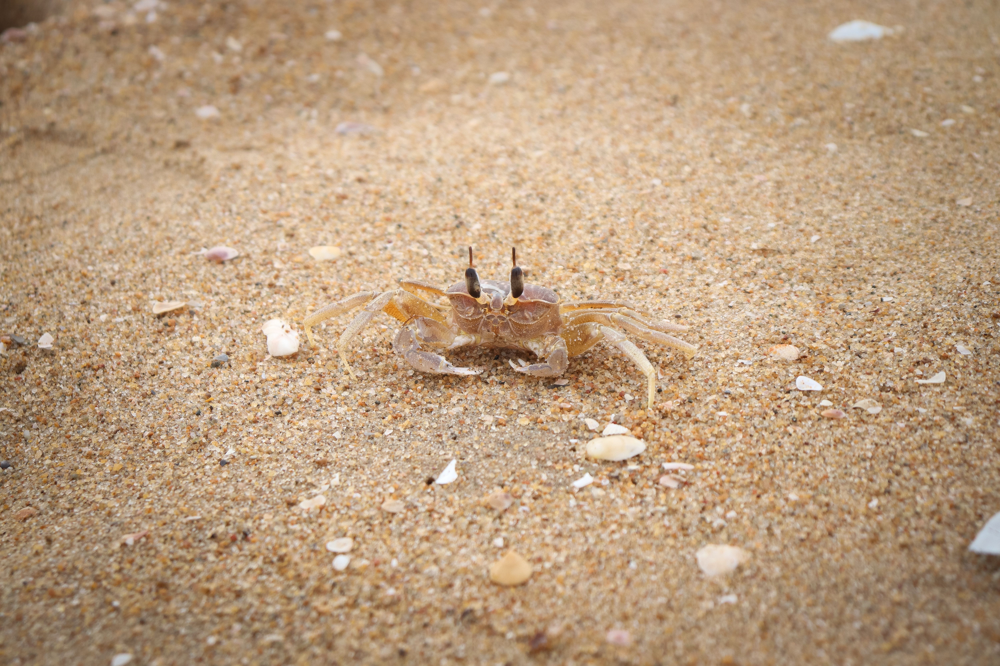
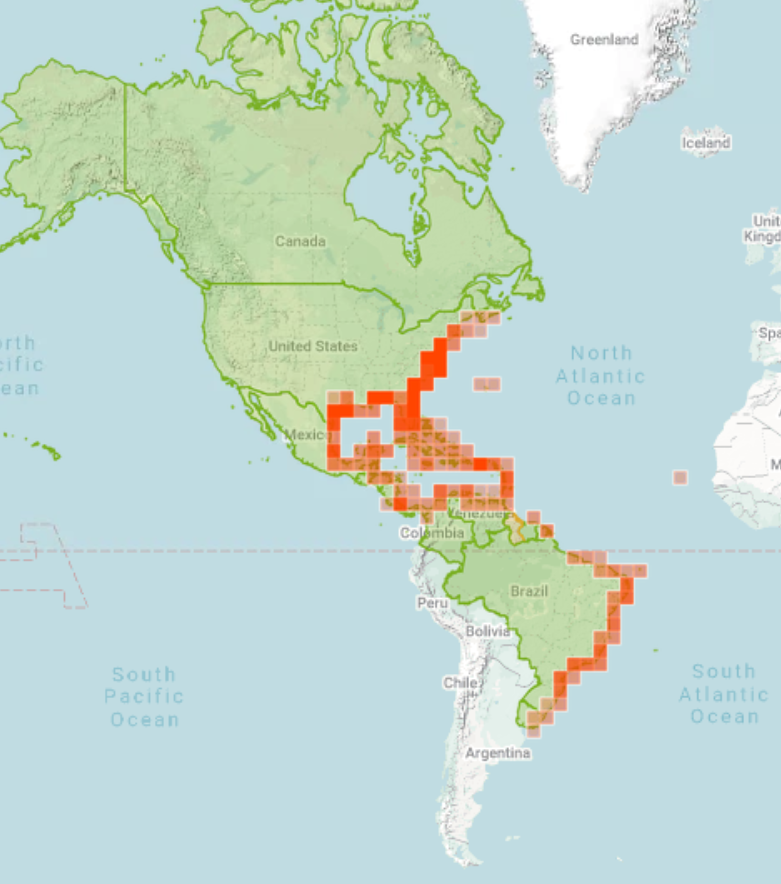

Quick Facts
- Size: 2-3 inches
- Weight: 90 grams
- Lifespan: 1-3 years; Up to 5 in captivity
- Conservation Status: Least Concern
- Range: Tropical and subtropical sandy coasts worldwide
Key Nighttime Adaptations
Ghost crabs have a specialized set of compound highly maneuverable eyestalks, given them 360-degree vision. Ghost crabs blend in incredibly well at night with their translucent, yellow coloring. They are capable of reaching speeds up to 10 feet per second allowing them to escape many predators. Much like the beach mouse, these crabs spend most of their day in cool moist burrows.
Diet
Ghost crabs are omnivorous scavengers, feeding on small animals, dead organisms, and plant material. They will eat just about anything they can find.
Role in Ecosystem
Ghost crabs act as the clean up crew for the coastal ecosystem. By quickly devouring any organic matter, they prevent build up of toxic bacteria, maintaining a healthy environment for other coastal organisms. As these guys are relentless diggers, they successfully aerate the sand, cycle moisture and nutrients throughout.
Fun Fact: Ghost crabs can "growl" at predators using a hidden teeth like structure in their stomach

Light Pollution's Effect on Ghost Crabs
Beach lighting can alter crab activity, disrupting their natural foraging and burrowing behaviors. These crabs are attracted to lit areas because the light attracts swarms of insects, which they feed on. This increases their vulnerability to predators and reduces their overall survivability.